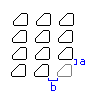

|
ArrayRectangular Method |
Creates a 2D or 3D rectangular array of objects.
Signature
RetVal = object.ArrayRectangular (NumberOfRows, NumberOfColumns, NumberOfLevels, DistBetweenRows, DistBetweenColumns, DistBetweenLevels)
Object
All Drawing Objects
The object this method applies to.
NumberOfRows
Integer; input-only
The number of rows in the rectangular array. This must be a positive number. If this number is 1, then NumberOfColumns must be greater than 1.
NumberOfColumns
Integer; input-only
The number of columns in the rectangular array. This must be a positive number. If this number is 1, then NumberOfRows must be greater than 1.
NumberOfLevels
Integer; input-only
The number of levels in a 3D array.
DistBetweenRows
Double; input-only
The distance between the rows. If the distance between rows is a positive number, rows are added upward from the base entity. If the distance is a negative number, rows are added downward.
DistBetweenColumns
Double; input-only
The distance between the columns. If the distance between columns is a positive number, columns are added to the right of the base entity. If the distance is a negative number, columns are added to the left.
DistBetweenLevels
Double; input-only
The distance between the array levels. If the distance between levels is a positive number, levels are added in the positive direction from the base entity. If the distance is a negative number, levels are added in the negative direction.
RetVal
Variant Array (array of objects)
The array of newly created objects.
Remarks
For a 2D array, specify the NumberOfRows, NumberOfColumns, DistBetweenRow, and DistBetweenColumns. For creating a 3D array, specify the NumberOfLevels and DistBetweenLevels as well.
A rectangular array is constructed by replicating the object in the selection set the appropriate number of times. If you define one row, you must specify more than one column and vice versa.
The object in the selection set is assumed to be in the lower left-hand corner, and the array is generated up and to the right. If the distance between rows is a negative number, rows are added downward. If the distance between columns is a negative number, the columns are added to the left.
AutoCAD builds the rectangular array along a baseline defined by the current snap rotation angle. This angle is zero by default, so the rows and columns of a rectangular array are orthogonal with respect to the X and Y drawing axes. You can change this angle and create a rotated array by setting the snap rotation angle to a nonzero value. To do this, use the SnapRotationAngle property.

Rectangular array with NumberOfRows = 4,
NumberOfColumns = 3, DistBetweenRows = a,
DistBetweenColumns = b.
The base entity is represented in blue.
NOTE You cannot execute this method while simultaneously iterating through a collection. An iteration will open the work space for a read-only operation, while this method attempts to perform a read-write operation. Complete any iteration before you call this method.
AttributeReference: You should not attempt to use this method on AttributeReference objects. AttributeReference objects inherit this method because they are one of the drawing objects, however, it is not feasible to perform this operation on an attribute reference.
| Comments? |